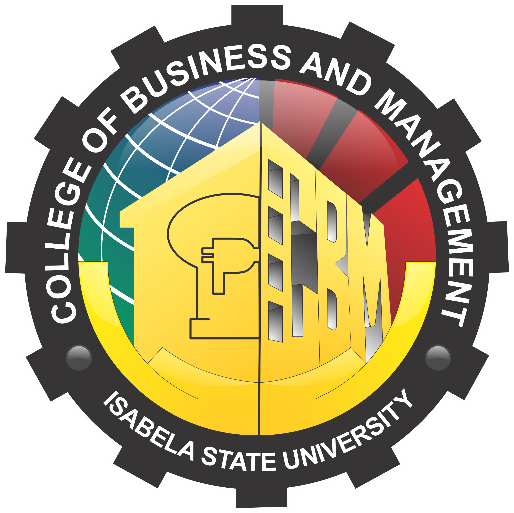

COLLEGE OF BUSINESS AND MANAGEMENT (CBM)
The College of Business Management aims to produce competent and effective managers, bankers, entrepreneurs, Hoteliers, and restauranteurs who are equipped with conceptual and human technical skills and well-served in application of business management principles, processes and strategies which are virtual to succeed in the dynamic and complex domestic and global business environment.
What Can I Do with A Business Administration Degree?
A Bachelor of Science in Business Administration (BSBA) degree is designed to provide students with a strong academic foundation in core business functions including general business administration, accounting, finance, project management, information technology, human resources, marketing, international business, logistics and organizational behavior.rnational arena.
Financial Accounting and Reporting
Basic Microeconomics
Good Governance and Social Responsibility
International Business Trade
Human Resource Management
The Law on Obligations and Contracts
Business Research
Thesis (Degree Requirements)
Taxation
What Can I Do with a Entrepreneurship Degree?
The Bachelor of Science in Entrepreneurship (BSEntrep.) is a four-year course offered in the College of Business, designed to provide undergraduate students an in-depth understanding and appreciation of new venture operations in small business enterprises. It aims to equip young students with entrepreneurial spirit to realize a vibrant and developing economy in the hands of the Filipinos and develop desirable qualities of leadership, social concern and moral values among them
Entrepreneurial Behavior
Programs and Policies in Enterprise Development
Obligation and Contract
Microeconomics
Market Research and Consumer
Pricing and Costing
Cost Accounting and Cost Management
Business Transfer Tax with Income Taxation
Entrepreneurial Integration
Business Plan Implementation
What Can I Do with a Hospitality Management Degree?
Bachelor of Science in Hospitality Management (BSHM) is a degree program that delivers education to people who are interested to build a career in the leisure industry involving the planning, development, implementation and control of culinary and accommodation/billeting operations, The BSHM program professionally trains and equip students with competencies that are needed to execute tasks on food production and accommodation operations and food – beverage service operations.
Risk management as applied to safety, security and sanitation
Quality service management in tourism and hospitality management
Philippine tourism, geography and culture
Applied Business tools and technologies/Property Management
Supply Chain management in Hospitality Industry
Food & beverage cost control
Tourism and Hospitality Marketing
Legal Aspects in Hospitality and tourism
Hospitality Research
What Can I Do with a Tourism Management Degree?
Bachelor of Science in Tourism Management (BSTM) is a degree program that delivers education to people who are interested to build a career in the travel and leisure industry involving tourism planning, development, implementation and control management functions, The BSTM program professionally trains and equip students with competencies that are needed to execute tasks on tourism planning and development, transportation services, travel and tour services. The program prepares them to become highly competent tourism management practitioners serving their constituents and those in allied professions while demonstrating high ethical and moral standards and the utmost in technical competence
Macro Perspective of Tourism and Hospitality
Quality Service Management in Tourism and Hospitality
Philippine Tourism, Geography and Culture
Foreign Language
Tour Guiding
Cruise Tourism
Tour and Travel Management
Travel Writing and Photography
Research in Tourism
Graduates of the BSTM program can become successful professionals and perform a variety of tasks in a wide range of positions or designations. Fresh BSTM graduates are best suited for jobs such as:
Reservation Agents
Flight Attendants
Travel Counsellor
Tour Planner
Tour Guide
Travel Representative
Travel Promotions Staff
Travel Agency Staff
Tour Manager
Tourism Center Director
What Can I do with an Accounting Information Systems Degree?
The Bachelor of Science in Accounting Information Systems (BSAIS) is a program that provides students general accounting education to students wanting to pursue a professional career in Accounting Information System. This profession combines knowledge in business, accounting and computer systems. By coordinating the information technology activities, providing expertise in choosing the best software or designing and maintaining the overall information system, assessing the integrity of systems, inefficiencies of a company’s system and recommending improvements to assist management in the formulation of an organization’s strategy, this profession helps in management operations and decision-making.
Financial Accounting and Reporting
Conceptual Frameworks and Accounting Standards
Cost accounting and Control
Intermediate Accounting
IT Application Tools in Business
Business Taxation
Statistical Analysis with Software Application
Strategic Management
International Trade and Business
Accounting Information System Research
Bachelor of Science in Accounting Information System aims to prepare its learners to pursue rewarding career in challenging and evolving work environment.
Accounting analyst
External auditor
State auditor
Junior analyst
Consulting staff
Junior IT internal auditor
Bookkeeper
Investment analyst
Junior Cost analyst
Data analyst
Budget analyst
Cost accountant
Staff accountant
Junior instructor
What Can I Do with a Management Accounting Degree?
Bachelor of Science in Management Accounting (BSMA) is a degree program that is designed to deliver accounting education to people who are interested to build a career in the field of managerial accounting involving controllership and specialized accountancy functions such as operational planning and budgeting, capital budgeting and project planning, responsibility accounting, cost accounting, and cost-benefit analysis, among others
Financial Accounting and Reporting
Managerial Economics
Cost Accounting Control
Intermediate Accounting
Business Taxation
Accounting for Business Combinations
Statistical Analysis with Software Application
Financial Markets
Sustainability and Strategic Audit
Management Accounting Research/Thesis
Graduates of the BSMA program can become successful professionals and perform a variety of tasks in a wide range of positions or designations. Fresh BSMA graduates especially those who have passed the CMA examinations can easily avail of entry-level jobs such as
Accounting/Budgeting
Assistant
Financial Analyst
Consulting Staff
Cost Analyst
Investment Analyst
Tax Accounting Staff
Budget Analyst
Credit Analyst
Cost Accountant
Accounting Examiner,
Budget Officer
Project Accountant.